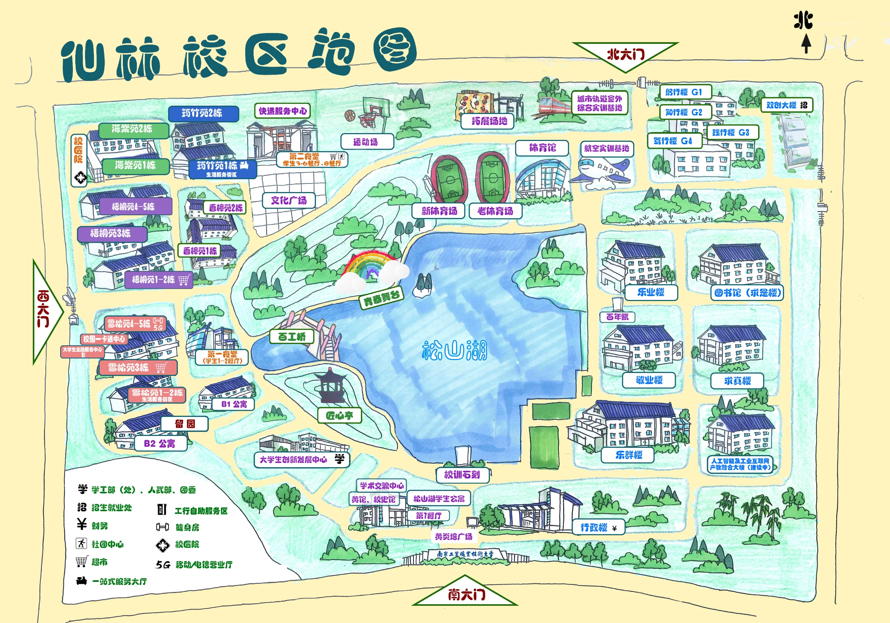

NEW SEMESTER COUNTDOWN
2027年9月1日 00:00
开学时间为暂定日期，最终安排以学校通知为准。
新生第一站
南京工业职业技术大学 · 新生入学手册
一份由新生提出问题、创建者首发解答、学长学姐持续补充、每年重新校订的校园知识手册。
CAMPUS MAP · XIANLIN
从西门、南门和北门进入校园，沿着松山湖辨认宿舍、教学楼、图书馆与运动区。

地铁2号线至羊山公园站，从1号出口换乘公交321路。
321、310、320、107、165、331路公交可达。
50、146、325路公交至羊山北路西或羊山北路总站。
107、165、310、331、321路公交可达。
ANNUAL KNOWLEDGE LOOP
新生的问题会变化，学校的安排也会变化。网站按照“提出问题—首发解答—经验补充—审核沉淀—年度迭代”的流程运行，让答案一届一届变得更完整、更准确。
从报到、课堂、宿舍、社团与事务办理等真实场景中收集问题，去重后归入主题目录。
创建者先核对官网、入学须知和官方通知，为每个问题整理一份可直接使用的基线答案。
开放补充回答区，邀请高年级同学补充真实经验、不同情况和容易忽略的操作细节。
只保留有用且符合规范的内容；修订不完整答案，删除广告、隐私、攻击、过期与不实信息。
每年结合新一届新生反馈和学校最新政策复核内容，归档旧版本并发布新一版知识库。
能解决具体问题 · 有事实依据 · 不泄露个人隐私 · 不包含广告与攻击 · 明确适用时间和校区
QUESTION INDEX
每个主题下方是一条条小标题。创建者先给出基础解答，高年级同学可以继续补充，经审核后公开展示。
涉及报到时间、校区安排、住宿规定、缴费与请假的细节，以录取通知书、新生入学须知、学校官网和辅导员通知为准。
SEARCH
输入关键词，检索全部问答。
按 Esc 关闭搜索窗口
CREATOR ACCESS
登录后可以审核、编辑、撤回或删除补充回答。新提交内容默认进入待审核状态，不会直接公开。
当前已进入管理模式。问题下方会显示待审核与已公开回答，可执行通过、撤回、编辑和删除操作。
EDIT ANSWER